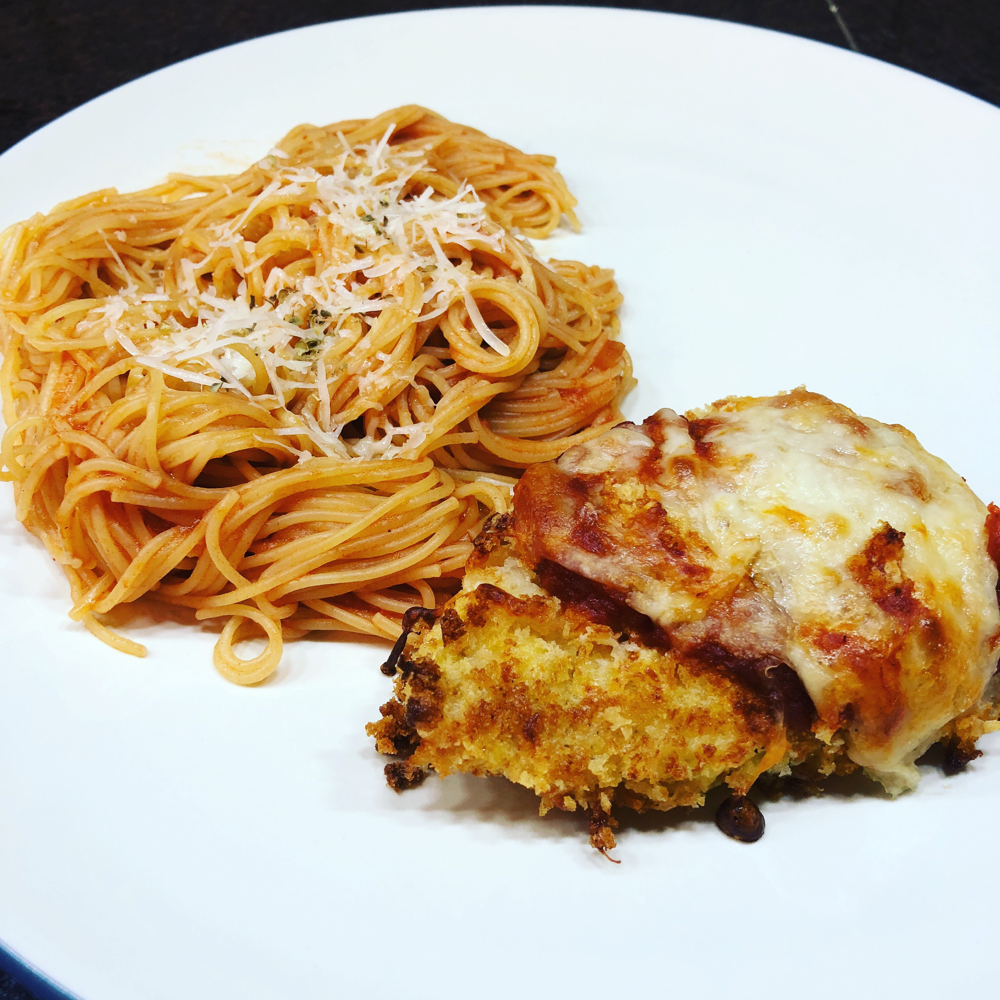

Chicken Parmesan

Ingredients
- 3 chicken breasts (I like to cut the breasts in half so there are 6 pieces.)
- Salt and pepper to taste
- 4 tablespoons of flour
- 2 eggs
- 1 cup of panko bread crumbs
- 1/2 cup of parmesan, shredded
- 1 tablespoon of olive oil
- 2 tablespoons of butter
- 1 cup of marinara sauce
- 3/4 cup of shredded mozzarella
Instructions
Preheat oven to 375˚F.
Season chicken with salt and pepper.
Mix the bread crumbs and the parmesan cheese in a shallow bowl. In another shallow bowl, pour the flour. And in a third bowl, beat the eggs.
Drench each chicken piece in the flour, then the eggs, then the bread crumb mixture.
In a large pan melt the butter and olive oil together. Add the coated chicken breasts to the pan and cook for about 3 minutes on each side. Note, the inside will still be raw. This is just to brown the crust.
Place chicken breasts on baking sheet. Top with marinara sauce and shredded mozzarella.
Bake for 18-20 minutes.
Serve with angel hair pasta and enjoy!
Original source: Dinner Then Dessert